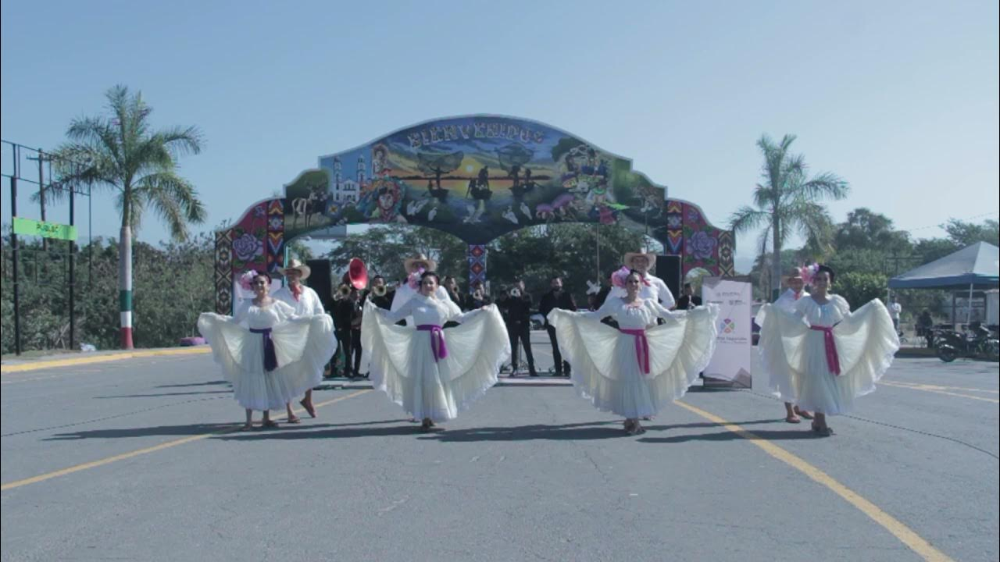
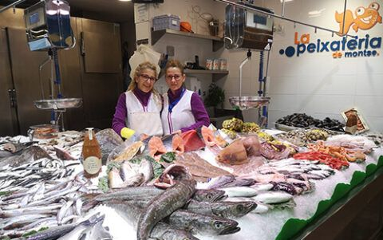

UBICACIÓN: Rosamorada está ubicado en el norte de Nayarit, México, cerca del mar y las marismas. La región es conocida por sus paisajes naturales únicos, que incluyen humedales y costas espectaculares.
HOSTORIA: Rosamorada tiene raíces históricas vinculadas a las comunidades indígenas y al desarrollo de la agricultura en la región. Durante la época colonial, su cercanía al mar permitió el comercio de productos locales. El nombre del municipio proviene de un árbol llamado "clavellina", cuyas flores moradas adornaban el paisaje y daban descanso a los viajeros.
FIESTAS: Entre las celebraciones más importantes se encuentra la Fiesta de la Virgen del Rosario, donde los habitantes realizan procesiones, danzas tradicionales y eventos culturales. También se celebran festividades en honor a la Purísima Concepción, con juegos pirotécnicos, música y gastronomía típica.
PRODUCCIÓN: La economía de Rosamorada está basada en la pesca ribereña, especialmente de camarón. Además, se destacan la agricultura, con cultivos como maíz, sandía, melón, frijol y chile. Las lagunas como Agua Brava y Pescadero son esenciales para la pesca y la biodiversidad de la región.
ATRACTIVOS: Rosamorada cuenta con sitios históricos como la ex Hacienda de Chilapa y la parroquia de la Purísima Concepción. Además, sus lagunas y marismas ofrecen oportunidades para el ecoturismo y la observación de aves.